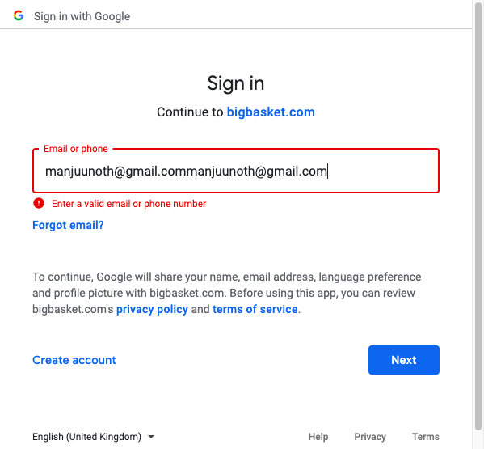

06-08-2020 at 21:07:38 IST
xFramium 1.0.5
Chrome_FirstScript[DS001]
/ OS X Chrome 54.0 on 127.0.0.1:4444 (SELENIUM)
| Steps Performed | Started | Status | | Click on the btn_Login element on the page Login | 21:07:26 (482ms) | Pass |
| Click on the btn_gmail element on the page Login | 21:07:27 (754ms) | Pass |
| Set the value of the txt_username element on the page Login to manjuunoth@gmail.com | 21:07:33 (549ms) | Pass |
| Click on the btn_Next element on the page Login | 21:07:34 (218ms) | Pass |
| errMessageView Error Detail | 21:07:36 (0ms) | Fail |
java.lang.reflect.InvocationTargetException
at sun.reflect.NativeMethodAccessorImpl.invoke0(Native Method)
at sun.reflect.NativeMethodAccessorImpl.invoke(NativeMethodAccessorImpl.java:62)
at sun.reflect.DelegatingMethodAccessorImpl.invoke(DelegatingMethodAccessorImpl.java:43)
at java.lang.reflect.Method.invoke(Method.java:498)
at org.xframium.page.factory.DefaultPageFactory.invoke(DefaultPageFactory.java:157)
at com.sun.proxy.$Proxy19.Login(Unknown Source)
at pages.spi.PageImplInvoker.Login(PageImplInvoker.java:21)
at uiAutomation.TestDriverClasses.FirstScript(TestDriverClasses.java:35)
at sun.reflect.NativeMethodAccessorImpl.invoke0(Native Method)
at sun.reflect.NativeMethodAccessorImpl.invoke(NativeMethodAccessorImpl.java:62)
at sun.reflect.DelegatingMethodAccessorImpl.invoke(DelegatingMethodAccessorImpl.java:43)
at java.lang.reflect.Method.invoke(Method.java:498)
at org.testng.internal.MethodInvocationHelper.invokeMethod(MethodInvocationHelper.java:124)
at org.testng.internal.Invoker.invokeMethod(Invoker.java:583)
at org.testng.internal.Invoker.invokeTestMethod(Invoker.java:719)
at org.testng.internal.TestMethodWithDataProviderMethodWorker.call(TestMethodWithDataProviderMethodWorker.java:71)
at org.testng.internal.TestMethodWithDataProviderMethodWorker.call(TestMethodWithDataProviderMethodWorker.java:14)
at java.util.concurrent.FutureTask.run(FutureTask.java:266)
at java.util.concurrent.Executors$RunnableAdapter.call(Executors.java:511)
at java.util.concurrent.FutureTask.run(FutureTask.java:266)
at java.util.concurrent.ThreadPoolExecutor.runWorker(ThreadPoolExecutor.java:1149)
at java.util.concurrent.ThreadPoolExecutor$Worker.run(ThreadPoolExecutor.java:624)
at java.lang.Thread.run(Thread.java:748)
Caused by: java.lang.NullPointerException
at functions.GenericFunctions._setValue(GenericFunctions.java:215)
at utility.CustomAbstractPage._setValue(CustomAbstractPage.java:102)
at pages.spi.LoginImpl.Login(LoginImpl.java:61)
... 23 more
| View Device State |
{kind=link}